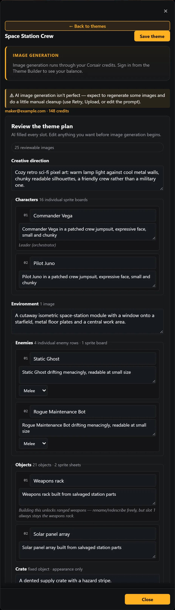

The Theme Builder starts with a single theme name field, then two buttons: Generate with AI and Build manually.
| Path | What it does |
|---|---|
| Generate with AI | Sends the name to the Theme Service, which drafts a full plan (creative direction, environment, and every character/object/rival/decor/badge field) for you to review and edit before anything is generated. |
| Build manually | Opens the same form empty except for the name, so you fill in creative direction, environment, and every roster field by hand. |
Either path lands on the same AI plan review screen before any images are generated — nothing is billed and no generation starts until you approve the plan there. The review screen shows your current credit balance and the estimated cost of the run, so you know what you're committing to before the first board generates (see § 5.3 · Credits & board costs).
From the plan review screen, the creative direction textarea is the seed every subsequent image prompt draws from — a short paragraph describing the overall look and feel (for example, a neon-city theme, or a high-seas theme) — and it's worth spending a minute getting it specific. An environment description covers the background/stage setting your characters will be built into.
| Slot | Count | Notes |
|---|---|---|
| Characters | 16 | Per-slot name + description each. |
| Rivals | 4 | Each has an attack style — melee or ranged — plus a description. |
| Objects | 21 across 2 boards | 19 static + 2 animated. Includes a crate, poof FX, and a projectile description. |
| Decor | 9 | Background/set-dressing pieces. |
Every theme has exactly 8 expressions, and the labels are fixed — you don't get to add or remove them, only re-skin their art to match your theme:
Love · Idea spark · Anger · Team rally · Thumbs up · Music · Sleep/zzz · Dazed
Up to 25 achievement badges round out the form. Badge names are editable, and their art is generated alongside everything else in the pipeline (Chapter 07).

Concrete visual descriptions beat vague ones. "A weathered dock worker in a faded blue coat with a hook hand" generates far more consistent art than "a worker" — every image prompt in the pipeline consumes the exact per-item description you write here, so specificity up front saves you retries later.
A per-item description is optional — leaving one blank falls back to the item's name in the prompt. A name alone ("Sana") reads as a name, not a look, so a blank description usually produces vaguer, less consistent art than a short visual description would.
Describe characters in shoulder-height poses rather than full-body extremes. Wide poses (arms fully outstretched, deep lunges) can clip at the edges of the character board when it's sliced into frames. Chapter 08 covers the details and how to recover if it happens anyway.
The creative direction textarea is the seed every board's prompts draw from — name the setting, era, and overall mood in a sentence or two ("a neon-soaked cyberpunk night market" reads far more consistently than "cyberpunk"), and lean on it instead of repeating style words in every item description.
Per-item visual descriptions should describe look, not name. "A weathered dock worker in a faded blue coat with a hook hand" generates consistent art; "the dock worker" or "Sana" does not — the model never sees the slot's name, only the description. Aim for one clear silhouette per item, plus the colors and materials that make it recognizable at a glance.
| Board | What to describe |
|---|---|
| Characters / roster | Full-body look, outfit, colors, one distinguishing prop. Shoulder-height poses, not full extensions. |
| Rivals | Compact poses with curled-in appendages — wide or outstretched limbs are the most common source of clipped rival frames (§ 8.4). |
| Objects / decor | Compact and centered; call out "fits fully in frame" for anything wide or sprawling to avoid bleeding into neighboring cells (§ 8.5). |
| Achievements / badges | A simple, iconic shape that reads small — badges render at icon size, so fine detail disappears. |
| Expressions | Describe the emotion's staging (pose, face, any effect lines) rather than restating the fixed label. |
There's no separate "retry notes" field — a retry always rebuilds the prompt from the item's current visual description. To steer a redo toward a specific correction ("less saturated, remove the hat"), edit the item's description first, then click Retry image. A retry with the description unchanged asks for a fresh take on the same prompt, which is the better choice when the first result was simply an off draw.
Note
Content screening blocks real people and real brand names/logos in any field, before anything is charged — see § 8.1 · Content screening for the categories and how to recover from a block.